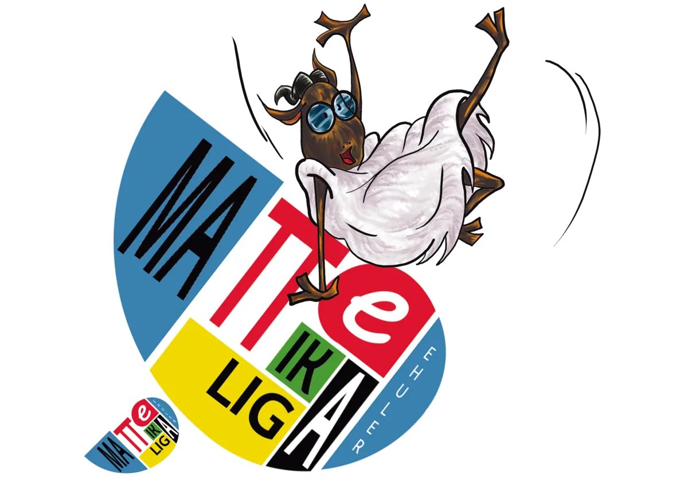

Cada partido dura 90 minutos y consiste en la resolución de tres problemas matemáticos. Los dos equipos reciben los problemas simultáneamente, en castellano y en euskera.

Cada solución recibe una puntuación entera entre 0 y 5. Una solución totalmente incorrecta obtiene 0 y una solución perfecta, 5. En los casos intermedios se valoran el avance del planteamiento y su proximidad a la solución correcta.
| Puntos de partido | Resultado |
|---|---|
| 3 puntos | Victoria |
| 1 punto | Empate |
| 0 puntos | Derrota |
Gana el partido el equipo que obtiene más puntos de problema. Si ambos equipos obtienen la misma puntuación, el partido termina en empate.
Las puntuaciones se publican en un plazo máximo de 72 horas desde la finalización de los encuentros de la jornada.
Cada equipo recibe una corrección detallada de sus soluciones, con los errores cometidos, los motivos de las deducciones y una posible vía hacia la solución correcta.
El delegado puede remitir reclamaciones a ligainstitutos@ehuler.eus en un plazo máximo de 72 horas desde la publicación de las actas.
Resolución en una semana. La Comisión de Arbitraje resuelve la reclamación y comunica su decisión a los equipos afectados en un plazo máximo de una semana desde su recepción. Los equipos afectados pueden recurrirla dentro de los mismos plazos. Si la resolución altera el resultado, el nuevo resultado se aplica a todos los efectos de la competición.
Para los jugadores con necesidades específicas de apoyo educativo, el tiempo de resolución puede ampliarse hasta un máximo de 10 minutos. La ampliación se concede antes del inicio general del partido: quienes tengan derecho a ella reciben los problemas hasta 10 minutos antes que el resto.
Estas personas deben figurar como jugadoras del encuentro y guardar secreto sobre los problemas hasta su entrega oficial a los demás participantes.
Para solicitarla, escribe a ligainstitutos@ehuler.eus adjuntando un certificado que acredite la situación. Solo podrá disfrutarse tras la confirmación expresa de la organización.
Antes de cada jornada se comunica si está permitido utilizar calculadoras u otros materiales de apoyo. Quedan prohibidos los recursos que proporcionen directamente las respuestas y, en particular, los sistemas de inteligencia artificial.
Cada equipo debe comparecer a la hora acordada. Si un equipo no se presenta, se le da el partido por perdido: el equipo compareciente recibe 3 puntos y el no compareciente, 0. Si no comparece ninguno, ambos reciben 0 puntos.
Consulta las bases completas o escríbenos y te ayudamos.